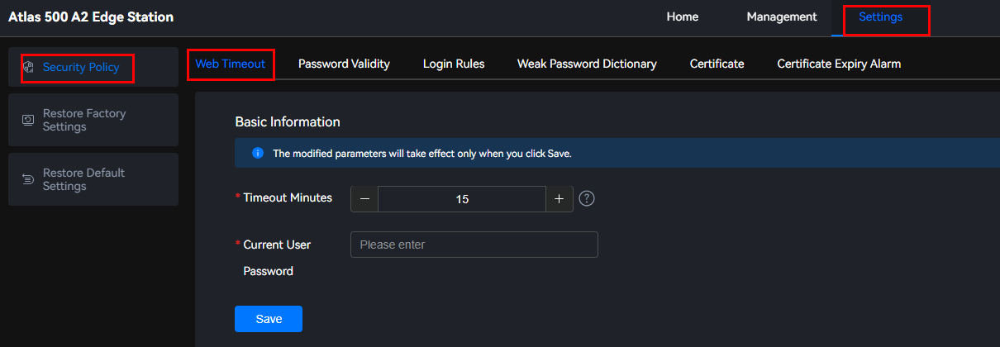

Setting the Web Timeout Interval
- Choose Settings > Security Policy > Web Timeout.Figure 1 Web timeout
 - Set the timeout minutes.
You can click the list box to manually enter the timeout minutes.
Specifically, you can click
 to set the timeout minutes. The default value of Timeout Minutes is 5 minutes. The value increases by one minute each time you click
to set the timeout minutes. The default value of Timeout Minutes is 5 minutes. The value increases by one minute each time you click  and decreases by one minute each time you click
and decreases by one minute each time you click  .Figure 2 Setting web timeout
.Figure 2 Setting web timeout

The value ranges from 5 to 120, in minutes. The default value is 15.
- In the Current User Password text box, enter the password of the current user.
- Click Save.
The message "Save successfully" is displayed, indicating that the web timeout interval is set successfully.